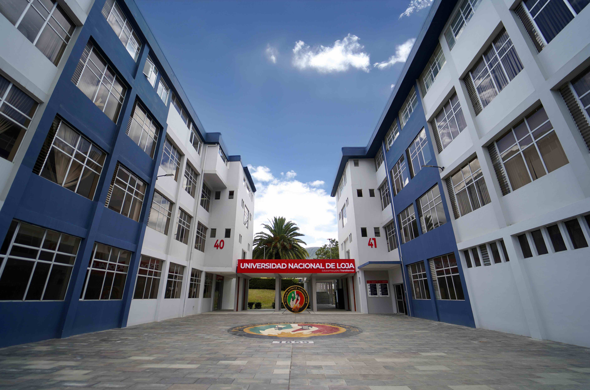
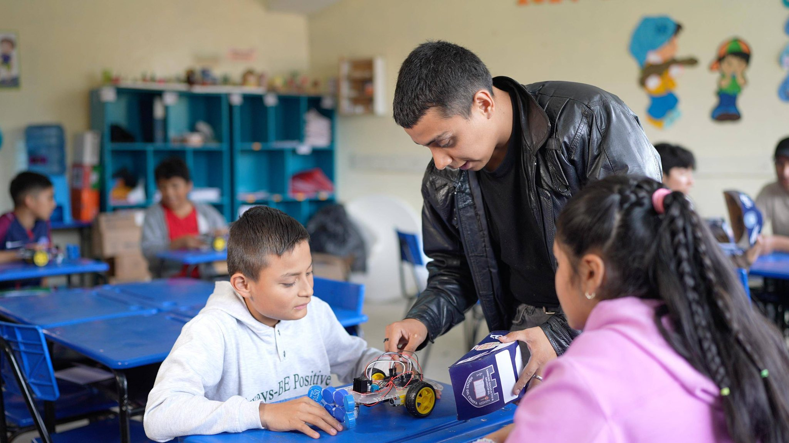

Laboratorios y prototipos
Software, computación aplicada y sistemas inteligentes: experimentación, simulación, configuración de redes y desarrollo de proyectos.
UNL / OFERTA ACADÉMICA / GRADO
Carrera de
Tecnología, innovación y talento
para un futuro sostenible.
CONSTRUYE EL FUTURO
La Computación combina algoritmos, software, datos e inteligencia artificial para comprender problemas y desarrollar soluciones tecnológicas. Una formación para diseñar soluciones integrales de software, sistemas y aplicaciones que contribuyan al desarrollo social, productivo y sostenible de la Zona 7 y del Ecuador.
Explora tu formación →
TU RUTA DE APRENDIZAJE
Explora las asignaturas, sus prerrequisitos y las unidades de formación.
Profundiza tus conocimientos en un área de alta demanda profesional.
Una formación práctica, innovadora y conectada con el entorno.

APRENDER HACIENDO
Interacción presencial, actividades virtuales y aprendizaje autónomo para una formación práctica.
Software, computación aplicada y sistemas inteligentes: experimentación, simulación, configuración de redes y desarrollo de proyectos.
El EVA apoya foros, tareas, trabajo colaborativo, recursos digitales y actividades autónomas de cada asignatura.
Entornos de experimentación, desarrollo y validación tecnológica para probar soluciones antes de transferirlas a organizaciones y comunidades.
CONOCIMIENTO QUE TRANSFORMA
Proyectos institucionales y trabajos científicos vinculados a Computación, incluyendo su participación interdisciplinaria.
INVESTIGACIÓN EN COLABORACIÓN
Dos especializaciones conectadas con la formación y los desafíos de nuestro entorno.
TECNOLOGÍA AL SERVICIO DEL ENTORNO
Proyectos de vinculación de Computación y resultados tecnológicos que contribuyen a la sociedad.
CONOCIMIENTO QUE COMPARTIMOS
Artículos científicos de integrantes de la Carrera de Computación.
PERSONAS QUE HACEN POSIBLE TU FORMACIÓN
Dirección, docentes, secretaría y apoyo técnico de la carrera de Computación.
Encuentra a tu docente o al equipo de apoyo.
ACTUALIDAD DE COMPUTACIÓN
Innovación e investigación con impacto en la sociedad.
Conoce el dispositivo de inteligencia artificial desarrollado con estudiantes de Computación.
Leer noticia →El aporte de Computación al procesamiento de lenguaje natural y la comprensión de información.
Leer noticia →TU PRÓXIMO PASO
Consulta los requisitos y el proceso de ingreso a través de los canales institucionales de la UNL.
Para consultas sobre la carrera, comunícate con su director, Edison Coronel, o consulta el directorio del equipo.